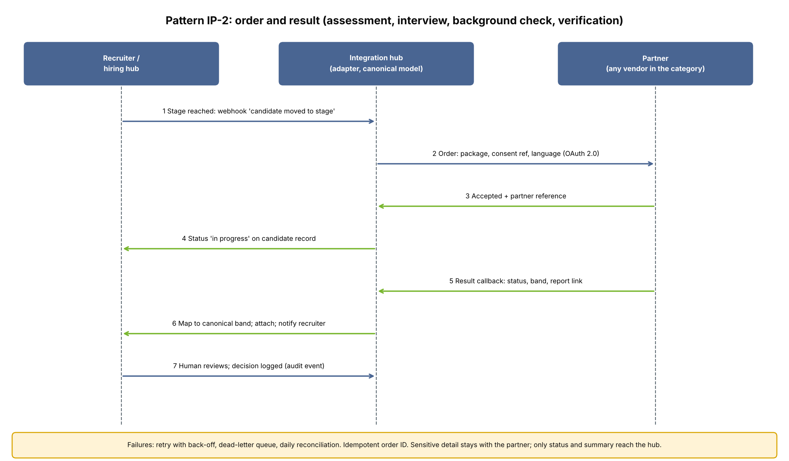

Chapter 20 · Edit this page online ↗
Integration Architecture and Patterns (Phases C and D)
ADM phase C Application and D TechnologyLead streams Integration, ApplicationSupporting Technology, Security, Data9P4V V2 ValueStandards TOGAF Phases C and D
On this page
In brief. Nine reusable patterns cover every partner category. A new partner reuses a pattern; it does not invent an integration.
20.1 Integration principles
Hub and spokes; events by default; one canonical model; scoped credentials; idempotent calls; every failure visible and recoverable (Chapter 6).
20.2 Pattern catalogue
| ID | Pattern | Use when | Mechanism | Security | Failure handling | Used by interfaces |
|---|---|---|---|---|---|---|
| IP-1 | Marketplace connector | A certified connector exists for the partner and the country | Configure the listed connector in the hub; partner enabled by tenant admin | Partner-level and customer-level OAuth credentials; scopes per partner | Vendor-supported retry; OmniVerse monitors outcome | IF-06, IF-11, IF-19, IF-23 |
| IP-2 | Order and result (assessment API) | Partner delivers an assessment, interview, check or verification and returns a result | Hub sends an order; partner returns status and result by callback or update call; attachment as signed link | OAuth 2.0 client credentials; per-tenant consent; signed callbacks | Idempotent order ID; retry; dead-letter; reconcile daily | IF-11 to IF-14, IF-19 to IF-22 |
| IP-3 | Inbound application | Job boards, referral tools, agencies or chat post applications | Partner calls the application interface with screening answers and consent | Partner key or OAuth; rate limit; schema validation | Reject with reason code; replay queue | IF-07, IF-30 |
| IP-4 | Outbound job feed | Jobs are pushed to boards and channels | Posting API, XML feed or board API; update and expire events | Signed feed or token; IP allow-list where offered | Posting status poll; alert on rejected postings | IF-06 |
| IP-5 | Event subscription with adapter | Any downstream system needs near real-time status | Hub webhook to gateway to integration hub adapter; mapping to canonical model | Signed payload; timestamp check; replay protection | Retry with back-off; dead-letter; manual replay | IF-18, IF-25, IF-31, IF-34, IF-37 |
| IP-6 | Reporting and bulk extract | Analytics, audit and reconciliation need bulk or history | Reporting API or scheduled export to data platform | Read-only scope; encrypted transfer; pseudonymised keys | Resumable batch; checksum; reconciliation | IF-08, IF-32, IF-35 |
| IP-7 | Identity federation and provisioning | Staff sign-in and account lifecycle | SAML 2.0 or OIDC; SCIM; group-to-role mapping | MFA; short sessions; access review | Break-glass account; alert on provisioning failure | IF-04, IF-05 |
| IP-8 | Secure file exchange | Partner has no API or sends large files | SFTP with PGP; landing zone; schema check | Key pair; allow-list; encryption at rest | File arrival monitor; quarantine on schema error | IF-03, IF-09, IF-22 |
| IP-9 | Embedded or linked experience | Candidate or staff completes a step inside a partner experience | Signed deep link or redirect; result returns through IP-2 | Short-lived token; no personal data in the URL | Fallback instructions; status check | IF-13, IF-21 |
20.3 Order and result (IP-2)
Used by assessment, AI interview, background check, identity and clearance partners.

20.4 Interface catalogue
| ID | Interface | From | To | Direction | Mode | Frequency | Data | Classification |
|---|---|---|---|---|---|---|---|---|
| IF-01 | Org, location, cost centre and position sync | HR core (C42) | Hiring hub (C05) | In | API via C32 / scheduled | Hourly and on change | Org units, locations, departments, positions, job classification | Confidential |
| IF-02 | Approved position to requisition | Workforce planning (C14) / HR core | Hiring hub (C05) | In | API / event | On approval | Position ID, grade, budget, headcount | Confidential |
| IF-03 | Hiring plan feed | Workforce planning (C14) | Hiring hub (C05) | In | API / file | Weekly | Forecast by role family and country | Confidential |
| IF-04 | User and role provisioning | IAM (C38) | Hiring hub | Out | SCIM | Event and daily | User, group, role | Confidential |
| IF-05 | Single sign-on | IAM (C38) | Hiring hub, partner portals | Both | SAML 2.0 / OIDC | On demand | Authentication assertion | Confidential |
| IF-06 | Job publication | Hiring hub (C11) | Job boards and channels | Out | API / XML feed | On event | Posting, location, pay range, apply link | Public |
| IF-07 | Inbound applications | Job boards, referral, agencies | Hiring hub (C06) | In | Application API / webhook | On event | Candidate, CV, answers, source, consent | Restricted |
| IF-08 | Campaign performance | Recruitment marketing (C12) | Data platform (C36) | In | API / file | Daily | Spend, clicks, apply starts, source | Internal |
| IF-09 | Pay benchmark to offer | Compensation intelligence (C13) | Hiring hub (C09) | In | API / file | Monthly | Ranges by job, grade and country | Confidential |
| IF-10 | Sourced prospect push | Sourcing tools (C15) | Hiring hub CRM (C07) | In | API | On event | Prospect profile, source, consent status | Restricted |
| IF-11 | Assessment order | Hiring hub (C06) | Assessment partner (C16) | Out | Assessment API (REST, OAuth 2.0) via C32 | On event | Candidate reference, package, language, accommodation flag | Restricted |
| IF-12 | Assessment result | Assessment partner (C16) | Hiring hub (C06) | In | Result callback / PATCH | On event | Status, score band, report link, attachment | Restricted |
| IF-13 | AI interview invitation | Hiring hub (C06) | Interview partner (C17) | Out | API / secure link | On event | Candidate reference, job, question set, deadline | Restricted |
| IF-14 | Interview record and summary | Interview partner (C17) | Hiring hub (C08) | In | Webhook / API | On event | Recording link, transcript reference, structured advisory scores | Restricted |
| IF-15 | Calendar and scheduling | Hiring hub (C18) | Calendars (Microsoft 365 or Google) and scheduler | Both | API | On demand | Free/busy, invites, rooms | Confidential |
| IF-16 | Candidate messaging | Hiring hub (C10) / C02 | SMS, WhatsApp and email gateways | Both | API | On event | Message, template, opt-in flag, delivery status | Restricted |
| IF-17 | Match and screen advice | AI services (C19) | Hiring hub (C06) | In | Internal API | On event | Match score, reasons, model version | Restricted |
| IF-18 | AI audit trail | Hiring hub / C19 | Responsible-AI control plane (C20) | Out | Event stream | Near real time | AI event, human decision, override | Restricted |
| IF-19 | Background check order | Hiring hub (C06) | Screening provider (C21) | Out | Partner API via C32 | On event | Candidate reference, package, consent reference, country | Restricted |
| IF-20 | Background check status and outcome | Screening provider (C21) | Hiring hub (C06) | In | Webhook / API | On event | Status, outcome, date (no raw detail) | Restricted |
| IF-21 | Identity and right-to-work verification | Verification provider (C22) | Hiring hub (C06) | Both | API / redirect | On event | Verification token, outcome, permit expiry | Restricted |
| IF-22 | Clearance status | HSE or provider system (C23) | Hiring hub, pre-boarding (C26) | In | API / secure file | On event | Fit-for-role flag, expiry, induction date | Restricted |
| IF-23 | Offer to e-signature | Hiring hub (C09) | E-signature (C24) | Out | API | On event | Offer document, signers, order | Confidential |
| IF-24 | Signed offer return | E-signature (C24) | Hiring hub (C09) | In | Webhook | On event | Signed file, audit certificate | Confidential |
| IF-25 | Hire to employee record | Hiring hub (C06) | HR core (C42) | Out | API via C32 | On event | Personal, job, position, pay, start date, source | Restricted |
| IF-26 | Employee ID return | HR core (C42) | Hiring hub (C06) | In | API via C32 | On event | Employee ID, status, start confirmation | Confidential |
| IF-27 | Pre-boarding tasks | Hiring hub / SmartOnboard (C26) | HR core onboarding or onboarding tool | Both | API / webhook | On event | Tasks, documents, completion | Restricted |
| IF-28 | Joiner provisioning request | HR core (C42) | IT service (C43), IAM (C38) | Out | API | On event | Joiner, role, location, start date | Confidential |
| IF-29 | Contract generation or EoR request | HR core / hub | Contract or EoR provider (C25) | Out | API | On event | Terms, location, start date | Restricted |
| IF-30 | Referral and engagement feed | Engagement and referral (C31) | Hiring hub (C06) | Both | API | Daily | Referral source, referrer, status | Internal |
| IF-31 | Survey trigger | Hiring hub | Survey platform (C29) | Out | Webhook / API | On event | Pseudonymised candidate reference, stage | Confidential |
| IF-32 | Survey results | Survey platform (C29) | Data platform (C36) | In | API / file | Weekly | Scores, anonymised comments | Confidential |
| IF-33 | Inclusive-language analysis | Hiring hub (C05) | DEI tool (C30) | Both | API | On event and batch | Job-ad text; aggregated funnel statistics | Internal |
| IF-34 | Recruiting events to data platform | Hiring hub (webhooks) | Data platform (C36) | Out | Webhook via C32 | Near real time | Stage changes, timestamps, source (pseudonymised) | Confidential |
| IF-35 | Reporting extract | Hiring hub Reporting API | Data platform (C36) | Out | Reporting API / batch | Daily | Pipeline snapshots, history | Confidential |
| IF-36 | Analytics serving | Data platform (C36) | Dashboards (C37) | Out | Query / semantic layer | On demand | Aggregated measures | Confidential |
| IF-37 | Consent and subject-request events | Consent manager (C40) | Hiring hub, partners | Both | API / webhook | On event | Consent, withdrawal, erasure request | Restricted |
| IF-38 | Security and audit logs | Hiring hub, C32, C33 | Security monitoring (C41) | Out | Syslog / API | Near real time | Access and change events | Confidential |
| IF-39 | Internal mobility match | Mobility marketplace (C27) | Hiring hub (C06) | Both | API | Daily | Internal profiles, open roles | Confidential |
| IF-40 | Alumni and rehire eligibility | Offboarding (C28) | Hiring hub CRM (C07) | Out | API | On event | Alumni consent, rehire flag | Restricted |
| IF-41 | Candidate ID cross-reference | Cross-reference service (C35) | Hiring hub, HR core, partners | Both | API | On event | Hub ID, employee ID, partner references | Restricted |
| IF-42 | Unified HRIS connector | Acquired HR systems (C34) | HR core / hub | Both | Unified API | Daily | Worker core data, org | Confidential |
20.5 Canonical model and mapping
Each partner adapter maps its codes and statuses to the canonical model: result status (ordered, in progress, complete, failed, expired), band (for example 1 to 5), report link and consent reference. Mappings are versioned tables, so replacing a partner changes the adapter, not the hub or the data platform.
20.6 Reliability and security
| Concern | Control |
|---|---|
| Delivery | Retry with back-off, dead-letter queue, daily reconciliation |
| Duplicates | Idempotent order ID per candidate, stage and partner |
| Authentication | OAuth 2.0 client per partner, least scope, vault, rotation |
| Webhooks | Signed, replay-protected, allow-listed source |
| Monitoring | Latency, error rate and volume per partner; alert to the partner owner |
| Change | Contract tests per release; partner notice of breaking change |